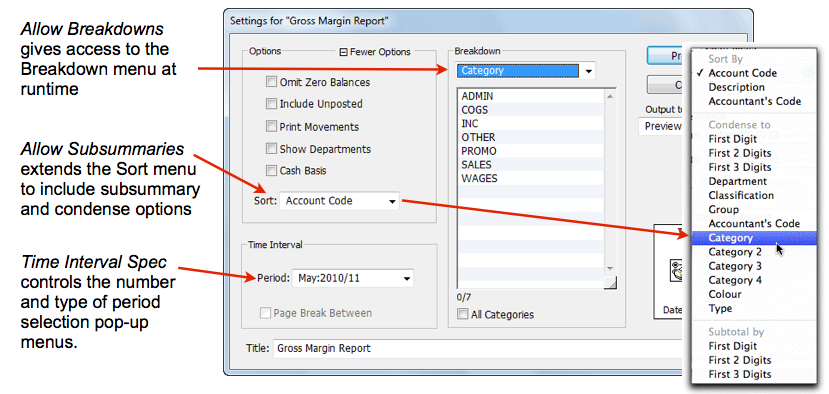

MoneyWorks Manual
Setting the Report Preferences
Different reports may have different requirements regarding how they handle financial periods. For example for some reports it might be appropriate to print the report over a range of periods, whereas for others it is only sensible to print it for a single period. Also some reports may have specific “environmental” variables or options that you need to specify at run time, such as a projected exchange rate, or number of work days in a month.

To set the Report Preferences:
- Click the Settings Toolbar button
The Report Preferences window will open.

- Set the options you require (as discussed below) and click OK
Report Run-Time Settings
The Standard Settings, Time Interval Spec and Custom Settings options determine which options are displayed in the Report Settings window when the report is run, and hence how configurable the report is at runtime.

Allow Subsummaries
This adds run-time sub-summary options to the Sort pop-up menu in Report Settings window, allowing the user to select a sub-summary or condensed report at runtime —see Subsummary Reports. Note that subsummaries can also be built into a report part —see Summarise these accounts, and that these override the user-selectable ones.
Allow Breakdowns
This gives the user access to the Breakdown options in the Report Settings window —see Breakdowns. If the option is not set, the user will not be able to do reports by (for example) individual department.
Custom Trans Format
Set this if you want to provide your own format for the layout of any transactions printed (using the Show Movements option) when the report is printed. When you set this a new report window will be displayed:

It is this “sub-report” that is processed whenever transactions need to be printed. It is set up to step through the relevant lines and print out the transaction information. You can move, delete, resize or add columns, or even add new parts (but be circumspect—a page break in the For loop will chew through a lot of paper, and a Range of Accounts will give unpredictable results). The actual information to be displayed is extracted using a cell formula.
Time Interval Spec
Determines the number of period menus available when printing the report. If it is not appropriate that your report has such menus (such as a back order report), you should turn this option off.
Choose From and To Period Two period pop-up menus will be displayed in the Report Setup box, allowing the selection of multiple periods for the report. One copy of the report will be printed for each period in the selected range.
Choose One Period Only A single pop-up period menu will be presented in the Report Setup box. The report will only be printed for the one selected period. You would use this setting where you have a report with (say) the 12 previous months listed in it in separate columns.
Choose Year Only A single pop-up menu with the Year Names will be presented in the Report Setup box. The report will only be printed for the nominated year, and the report period is set to the last period of the year. You would use this setting where you have a report that lists all the periods in a financial year in separate columns.
Custom Settings
Turn this option on if you want to add custom controls, privilege control or environment variables to your report. Any controls created here will appear below the Sort menu in the Report Settings window, and can be set by the user when the report is run. See Custom Settings for more details.
Always Preview
This can only be set if there are no other output settings. If set, no Report Settings will be displayed when the report is run, and it will always be previewed. You will not be able to print, email, send to Excel etc (although you can print and email from the Preview window).
Future Periods
In MoneyWorks it is possible to show data in a report from a period that has not yet occurred (i.e. after the current period). The Future Periods options allow you to specify what you want to show in this case:
Zero The value for future periods will be displayed as zero.
Budget (B) The B budget will be used for the future periods.
Use Standard Report Font: If this is set, the report will only use the standard report font and size. Any individual fonts that might have been built into the report are ignored, although their Style attributes will be maintained.
Performance: Run on server if possible
Complex reports can run much faster on the MoneyWorks Datacentre Server. However such reports must be able to run independently of the client (so for example cannot process a selection of highlighted records, unless you pass the selection to the server an invisible control. Select this option for eligible reports that take more than a few seconds to run.
Tip: Hold down the Shift key when you click Preview and MoneyWorks will reverse the setting if possible when it prepares the report.
No Output Options
Turn this on if you want to make a Report Script. Such a report, if placed in the MoneyWorks Custom Plug-ins/Scripts folder, will appear at the end of the Command menu (along with other user installed scripts). This allows you to use reports as simple scripts.
If this is turned on, no output options apart from your custom controls will be presented when the report is run. The Print/Preview button is replaced by a Run button. Any output generated by the report will appear in the Preview window.

For the No Output Options to be enabled you must first turn off the Standard Settings and Time Interval Settings.